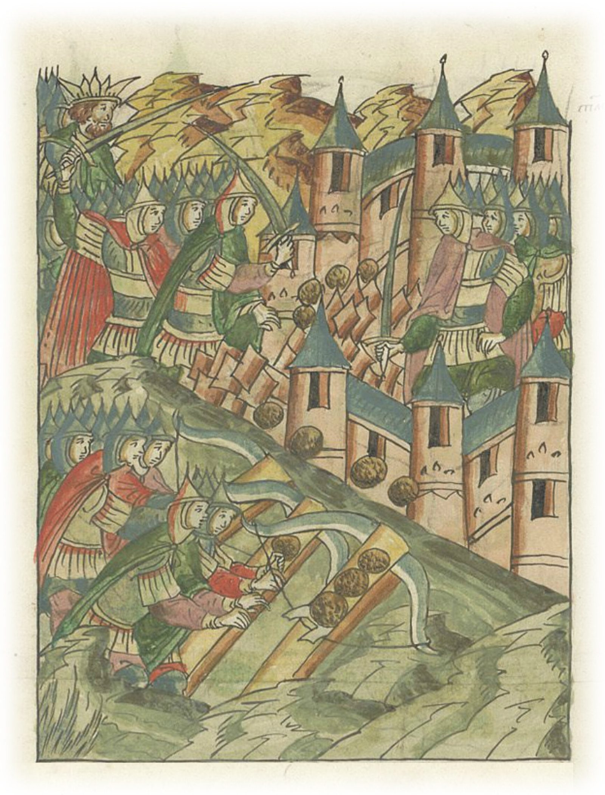
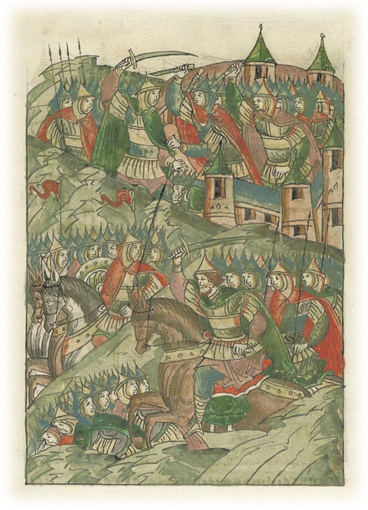
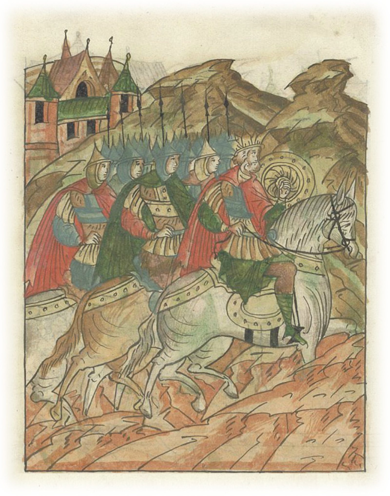

Первый цифровой музей достижений России · Цивилизация первенств — что Россия дала миру раньше всех
Русские не сдаются
И один в поле воин, если он по-русски скроен



Лицевой летописный свод, XVI век — «Татары начинают захват Козельска»Враг у стен малого города. Миниатюра XVI века изображает осаду, о которой летописец рассказал по следам событий.
Лицевой летописный свод, XVI век — «Горожане выходят против татар»Козляне не отсиживаются за стенами — они выходят на вылазку и режутся с врагом, по летописи перебив до четырёх тысяч.
Лицевой летописный свод, XVI век — «Взяв Козельск, хан Батый идёт в Половецкую землю»После семи недель осады Батый уходит в степь — не дойдя до Новгорода.
крепость · 1238 · река Жиздра
Оборона Козельска
Семь недель город держал орду — Батый назвал его злым.
◆ Выбор
Жители на вече порешили не сдаваться — не вдатися Батыю, хоть князь был совсем юн. За веру и за отрока-князя положили жизнь.
◆ Стойкость
Семь недель — дольше всех городов нашествия. Рязань пала за пять дней, Владимир — за шесть.
◆ Память
Батый велел звать Козельск не иначе как «злым городом» — и после него не пошёл дальше на Новгород.
7
недель держался город
5
дней держалась Рязань
4 тыс.
врагов — по летописи, в вылазке
3
сына темников пали под стенами
Числа — по Ипатьевской летописи и Рашид-ад-Дину; детали осады и потери в источниках разнятся.
Среда подвига
Город на реке, который стал островом
Весна 1238 года. После Рязани, Владимира и Суздаля орда Батыя подходит к малому городу Козельску на реке Жиздре. Следи по карте: путь всей орды — и где он остановился надолго.
Путь орды — и город, что его остановил
Нажми на точку — увидишь, что там произошло.
Цепочка выбора
Три дороги, из которых вече выбрало стоять
Открыть ворота, уйти в леса или держаться — в их положении сдаться было бы расчётом. На вече Козельска прошли по каждой дороге до конца — и выбрали ту, что вела в огонь.
СдатьсяСохранить жизнь — и потерять всё
Рязань уже пала, Владимир пал. Открыть ворота означало остаться в живых. Но что оставалось бы от города и от веры, ради которой здесь жили?
Уйти в лесаБросить город и отрока-князя
Разойтись по лесам, пока не подошла орда, — так спаслись бы многие. Но князь был совсем юн, и его некому было защитить, кроме самих козлян.
ДержатьсяПоложить жизнь за веру и за князя
«Хоть князь наш молод, но положим жизнь свою за него» — так порешили на вече. Не за победу — победы не ждали. За то, чтобы не сдаться.
Вече выбрало держаться: город не сдаётся, пока жив хоть один. Не ради победы — ради того, чтобы остаться собой.
Источник
Что записала летопись
Два голоса смотрят на одно и то же: русский летописец — изнутри города, персидский историк — со стороны осаждающих. Оба сходятся в одном: город не сдавался.
Ипатьевская (Галицко-Волынская) летопись · о Козельске
«Пришёл Батый к городу Козельску… Жители же Козельска совет сотворили — не вдатися Батыю, сказав: „Хоть князь наш молод, но положим жизнь свою за него“». Город держался семь недель. Козляне вышли из стен, «иссекли пращи» — изрубили камнемётные орудия — и, по летописи, перебили до четырёх тысяч врагов, сами полегли все.
Ипатьевская летопись (Галицко-Волынский свод) — по ИРЛИ РАН «Библиотека литературы Древней Руси» (lib.pushkinskijdom.ru).
Рашид-ад-Дин, «Сборник летописей» · взгляд со стороны орды
Персидский историк, служивший монгольским ханам, записал: Батый подошёл к Козельску и не мог взять его два месяца, пока не подоспели отряды Кадана и Бури. Вражеский источник сам засвидетельствовал: малый город держался непривычно долго.
Рашид-ад-Дин «Сборник летописей» — в передаче научных работ (Каргалов В. В., «Конец ордынского ига», militera.lib.ru).
Цифра-парадокс
В это трудно поверить
Факт 1Семь недель против пяти дней
Рязань держалась пять дней, Владимир — шесть. Козельск, малый город на Жиздре, держал всю орду семь недель — дольше любого города нашествия. По расчёту он должен был пасть за считанные дни.
Факт 2Вышли из стен — и изрубили машины
Козляне не просто сидели за стенами. В вылазке они иссекли камнемётные орудия, ломавшие их стены, и, по летописи, перебили до четырёх тысяч врагов. Сами полегли все.
Факт 3Три сына темников
Под стенами Козельска пали три сына татарских военачальников-темников, и тела их не нашли среди множества погибших. Малый город дорого обошёлся осаждавшим.
Факт 4До Новгорода не дошёл
После Козельска Батый развернулся и ушёл в степь, не дойдя до Новгорода. Причина — распутица и истощённое войско. Но и семь недель под стенами одного города ему дорого стоили.
Подвиг
Семь недель, которых не должно было быть
Весна 1238 года. После Рязани и Владимира орда Батыя движется дальше и подходит к малому городу Козельску на реке Жиздре. Городок невелик, но место крепкое: холм в междуречье Жиздры и Другусны, ров, а весенний разлив превращает его почти в остров. В городе княжит отрок Василий — летопись зовёт его «юным», учёные считают, что ему было около двенадцати лет.
Положение то, в котором города сдаются: Рязань уже сожжена, Владимир пал, помощи ждать неоткуда. Жители собираются на вече и постановляют иначе: не вдатися Батыю. «Хоть князь наш молод, — говорят они, — но положим жизнь свою за него». За веру и за отрока-князя, которого больше некому защитить.
Лицевой летописный свод, XVI век — «Горожане выходят против татар». Козляне не отсиживаются за стенами, а выходят на вылазку и режутся с врагом.
Батый подходит и застревает под стенами. Не на день, не на два — на семь недель. Персидский историк Рашид-ад-Дин, служивший ханам, запишет: город не могли взять два месяца, пока не подоспели ещё два отряда. Защитники не ждут штурма — они сами выходят: в вылазке иссекают камнемётные орудия, «пращи», ломавшие их стены, и, по летописи, перебивают до четырёх тысяч врагов. Сами полегли все.
Когда город всё же пал, Батый приказал не щадить никого — «до ссущих млеко», до грудных младенцев. О князе Василии летописец не знает наверное: «инии же глаголаху, яко в крови утонул, понеже был молод». И велел Батый звать Козельск не иначе как «злым городом» — под его стенами пали три сына темников, и тел их не нашли среди множества трупов.
После Козельска Батый развернул войско и ушёл в Половецкую степь, не дойдя до Новгорода. Суть одна, и она не зависит от числа убитых: город, которому расчёт велел сдаться, выбрал не сдаться. Не ради победы — победы не ждали. Ради того, чтобы остаться собой.
Поговори
Спроси Козельск
Задай вопрос — ответит собирательный голос защитников города. Ответы собраны из летописи и научных работ о нашествии.
Ответы сформированы на основе документальных источников.
Цена и память
Факт и миф — честно
Об обороне Козельска многое досказано за восемь веков. Где история, а где легенда — говорим прямо.
Развернуть — что известно, а что нет
Факт: осада была
Оборона Козельска весной 1238 года — исторический факт. О ней рассказывают сразу три независимых источника: Ипатьевская (Галицко-Волынская) летопись, Никоновская летопись и персидский историк Рашид-ад-Дин, служивший монгольским ханам.
«Семь недель» или «два месяца»?
Русская летопись называет семь недель, Рашид-ад-Дин — два месяца. Цифры немного расходятся, но сходятся в главном: малый Козельск держался дольше всех городов нашествия. Оговорка — только о точной цифре, не о самом упорстве.
«Злой город» — слова Батыя?
Формула «злой город» пришла из русской летописи, а не из монгольского документа. Был ли это буквальный приказ Батыя — проверить нечем. Но то, что враг запомнил этот город особо, подтверждает и Рашид-ад-Дин, и летописная память.
«В крови утонул» — легенда
Про гибель юного князя Василия летописец сам пишет с оговоркой: «инии глаголаху» — некоторые говорили, что он утонул в крови, потому что был молод. Это не утверждение, а народная молва, зафиксированная летописцем. Точная судьба князя неизвестна.
«Четыре тысячи убитых»
Цифра потерь осаждавших из летописи — до четырёх тысяч — скорее всего завышена, как это обычно бывает в летописных рассказах о битвах. Сам факт вылазки и уничтожения осадных машин сомнений не вызывает.
Лицевой летописный свод, XVI век — «Взяв Козельск, хан Батый идёт в Половецкую землю». Миниатюры свода Ивана Грозного, 1565–1576, общественное достояние.
Источники: Ипатьевская (Галицко-Волынская) летопись · Никоновская летопись · Рашид-ад-Дин «Сборник летописей» · Каргалов В. В. · ИРЛИ РАН.
Контекст
Что делал мир в 1238 году
Тяни ленту вбок — увидишь, что происходило параллельно с подвигом.
1237
Орда на Руси
В декабре Батый берёт Рязань за пять дней. Воевода Евпатий Коловрат с малой дружиной догоняет уходящую орду и принимает бой, которого не мог выиграть.
1238
Битва на реке Сити
4 марта в бою гибнет великий князь Юрий Всеволодович. Северо-Восточная Русь разорена, путь орде, кажется, открыт.
1238
Козельск держится
Малый город на Жиздре семь недель не открывает ворота. Батый не может взять его, пока не подоспеют новые отряды.
1238
Мир за пределами
В Европе правит император Фридрих II, идёт борьба с папством. Запад ещё не осознал масштаб угрозы, пришедшей с востока.
Твой выбор
А как поступил бы ты?
Весна 1238 года. Ты — на вече Козельска. Рязань и Владимир уже пали, орда подходит к стенам. Что ты скажешь?
Открываю ворота — сохранить жизнь, но сдать город и юного князя
Ухожу в леса — спастись, но бросить город и тех, кто не может уйти
Держу город — положить жизнь за веру и за князя
А они сделали так. Козляне порешили не сдаваться и держались семь недель — дольше всех городов нашествия. Не потому, что были сильнее. Потому что решили не сдаться.
Проверь себя
Викторина
Календарь подвига
Выбери любой день месяца
Каждый подсвеченный день — человек или отряд, который не сдался. Нажми на число — увидишь имя и хук.
Куда дальше
Музей продолжается
Следующий день5 — Брестская крепость → «Умираю, но не сдаюсь» — надпись на кирпиче, а не в приказе.